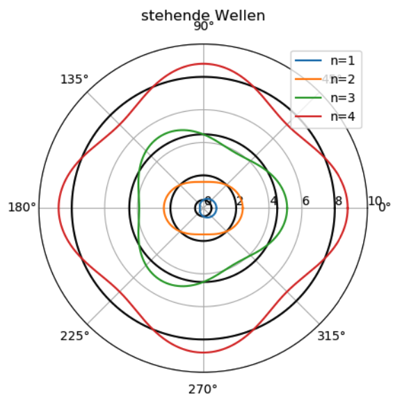

Quantenmechanik
Etymologie
Das Word Quantenmechanik setzt sich zusammen aus dem Wort Quantität und
Mechanik.
In der Quantenmechanik wird, anders wie in dem Alltag, die Energie nicht
kontinuierlich sondern in Portionen abgegeben. Diese werden
Energiequanten oder Energieportionen genannt.
Photoeffekt, lichtelektrischer Effekt, photoelektrischer Effekt
Der Photoeffekt, behandelt das Freisetzen von Elektronen aus einem Metall, wenn diese von elektromagnetischer Strahlung getroffen wird.
Versuch
Eine negativ geladene Metallplatte wird mit elektromagnetischer
Strahlung bestrahlt. Die elektromagnetische Strahlung wird bei dem
Versuch von einer Quecksilberdampflampe geliefert. Dieses Licht besteht
aus: sichtbarem Licht sowie ultraviolettem Licht. Dabei entlädt sich die
Platte.
Bei dem Versuch ist die Lichtintensität irrelevant. Bei höherer Frequenz
zum Beispiel Licht mit ultraviolettem Licht lösen sich dei Elektronen ab
und sie entlädt sich.
Schlussfolgerung
Der Photoeffekt ist also abhänging von der Wellenlänge sowie der Frequenz der elektromagnetischen Strahlung, sowie Material. Und es gibt eine Grenzfrequenz $f_G$ und auch eine Grenzwellenlänge $\lambda_G$. Der Photoeffekt ist jedoch nicht von der Lichtintensität abhänging. Die Elektronen werden also abgestoβen in einem Stoβvorgang.
Gültigkeitsbedingungen
Sodass der Photoeffekt eintritt müssen:
$$ f \geqslant f_G $$und
$$ \lambda \leqslant \lambda_G $$Daher gilt:
$$ \lambda_G = \frac{c}{f_G} $$Photon, Lichtquant
Um den Photoeffekt zu erklären wurde das Photon postuliert.
Dieses Teilchen erklärt nun den Stoβvorgang, das die Elektronen
abstoβt. Es kann als Art: Energiebündel
, gesehen werden. Die
Energie des Photons $E$ beträgt:
mit
$$h,\ Planck-Konstante$$ $$ h,\ 6,626 \cdot 10^{-34} Js $$Siehe Naturkonstanten.
Prinzip der Gegenfeldmethode
Bei der Gegenfeldmethode wird eine Metallplatte mit Photonen beschossen. Mit einer gewissen Lichtintensität lösen sich durch einen Stoβvorgang zwischen den Photonen und Elektronen die Elektronen ab.
Herleitung
Die Elektronen haben beim Austreten folgende Energie:
$$ E_{Photon} = W_A + E_{kin} $$ $$\Leftrightarrow h \cdot f = W_A + U_G \cdot \left| e \right|$$ $$ \Leftrightarrow U_G \cdot \left| e \right| = h \cdot f - W_A$$ $$ \Leftrightarrow U_G \cdot \left| e \right| = h \cdot f - W_A = \frac{1}{2} m \cdot v^2$$Für 2 verschiedene Punkte gilt:
$$ U_{G1} \cdot \left| e \right| = h \cdot f_1 - W_A\ (1)$$ $$ U_{G2} \cdot \left| e \right| = h \cdot f_2 - W_A\ (2)$$$(1) - (2)$:
$$\left | e \right | \left( U_{G1} - U_{G2} \right) = h \cdot \left( f_1 - f_2 \right) $$ $$ \Leftrightarrow h = \frac{\left | e \right | \left( U_{G1} - U_{G2} \right)}{ f_1 - f_2 } $$Impuls der Photonen
Herleitung
Laut Relativitätstheorie gilt:
$$ p= \frac{m_0}{\sqrt{1-\frac{v^2}{c^2}}} \cdot v = m \cdot v$$ $$ \Leftrightarrow m = \frac{p}{v} \ (1) $$Und
$$ E = \frac{m_0}{\sqrt{1-\frac{v^2}{c^2}}} \cdot c^2 = m \cdot c^2 $$ $$ \Leftrightarrow m = \frac{E}{c^2} \ (2) $$$(1) = (2)$:
$$\frac{p}{v} = \frac{E}{c^2}$$ $$ p = \frac{E \cdot v}{c^2} $$mit: $E_{Photon} = h \cdot f$
$$ p = \frac{h \cdot f \cdot v}{c^2} $$Da $c = v$ und $ \lambda = h \cdot f$
$$ p = \frac{h \cdot f}{c} = \frac{\lambda}{c} $$Formel
$$ p = \frac{\lambda}{c} $$Welle-Teilchen-Dualismus der Elektronen
Der Welle-Teilchen-Dualismus des Elektrons bedeutet, dass das Elektron sich als Welle sowie auch als Teilchen verhalten kann.
De Broglie-Wellenlänge
Ein Teilchen mit dem Impuls $p$ hat die Wellenlänge $\lambda$:
Formel
$$ \lambda = \frac{h}{p} $$oder auch
$$ \lambda = \frac{h}{m \cdot v} $$De-Broglie-Wellenlänge in der Atomhülle
Bei stehenden Wellen um den Atomkern ist der Bahnumfang ein ganzzahliges Vielfaches der Wellenlänge. Die Aufenthaltswahrscheinlichkeit der Elektronen ist zeitlich konstant.
Siehe Kapitel: Wellenlehre, um mehr über stehende Wellen zu erfahren.
Stehende Wellen entsprechen den möglichen stabilen Zuständen des Elektrons im Atom. Für diese Zustände gilt:
$$ 2\pi \cdot r = n \cdot \lambda $$ $$n,\ Quantenzahl$$wobei:
$$ \lambda = \frac{h}{p}$$und
$$ n \in \mathbb{N} $$Bohr'sche Quantenbedingung
Herleitung
Es gilt:
$$ 2\pi \cdot r = n \cdot \lambda $$ $$\Leftrightarrow r \cdot p = n \cdot \frac{h}{2\pi} $$mit: $p=m_e \cdot v$
$$\Leftrightarrow r \cdot m_e \cdot v = n \cdot \frac{h}{2\pi} $$Bemerkung
Diese Formel wird oft mit $\hslash$ angegeben
$$ r \cdot m_e \cdot v = n \cdot \hslash $$Hierbei bedeutet $\hslash$
$$ \hslash = \frac{h}{2\pi}$$Geschwindigkeit der Elektronen im Bahnradius
Stellt man die Bohr'sche Quantenbedingung um nach der Geschwindigkeit $v$ erhält man:
$$ v = n\cdot \frac{h}{2\pi \cdot m_e \cdot r} $$Ionisationsenergie im Wasserstoffatom
Herleitung
$$ W = \int_r^{+\infty} \overrightarrow{F} \cdot d \overrightarrow{r}$$ $$ = \int_r^{+\infty} \overrightarrow{-F_{el}} \cdot d \overrightarrow{r}$$ $$ = \int_r^{+\infty} \frac{1}{4\pi \varepsilon_0} \cdot \frac{e^2}{r^2} \cdot d r$$ $$ = \frac{e^2}{4\pi \varepsilon_0} \cdot \int_r^{+\infty} \frac{1}{r^2} d r$$ $$= \frac{e^2}{4\pi \varepsilon_0} \cdot \left[ - \frac{1}{r^2} \right]_r^{+\infty} $$ $$= \frac{e^2}{4\pi \varepsilon_0} \cdot \left( \frac{1}{r} \right) $$ $$= \frac{1}{4\pi \varepsilon_0} \cdot \frac{e^2}{r} > 0$$Die verrichtete Arbeit bei der Ionisierung ist positiv das Elektron gewinnt also an potentieller Energie
Es gilt:
$$ E_{potentiell, \infty} = E_{potentiell} + W $$Gesamtenergie des Elektrons im Wasserstoffatoms
Es gilt:
$$ E_{gesamt} = E_{kinetisch} + E_{potentiell}$$Durch Einsetzen erhält man:
$$ E_{gesamt} = \frac{1}{2}\cdot m_e \cdot v^2 - \frac{1}{4\pi \varepsilon_0} \cdot \frac{e^2}{r}$$Bahnradien im Bohr'schen Atommodell
Nach dem $1^{ten}$ Bohrschen Postulat, bewegen sich Elektronen
strahlungsfrei auf kreisförmigen Bahnen.
Also gilt:
mit Quantenbedingung:
$$ v = \frac{h \cdot n}{2 \pi \cdot m_e \cdot r}\ (2) $$$(1)$ in $(2)$
$$ \frac{1}{4\pi \varepsilon_0} \cdot \frac{e^2}{r} = \frac{m_e \cdot h^2 \cdot n^2}{r^3 \cdot 4 \pi^2 \cdot m_e^2 } $$Da $r \sim n$ schreibt man $r_n$
Umstellen:
$$ r_n = \frac{ \varepsilon_0 \cdot h^2}{\pi \cdot m_e } \cdot n^2 $$Formel
$$ r_n = \frac{ \varepsilon_0 \cdot h^2}{\pi \cdot m_e } \cdot n^2 $$Bohr'scher Radius
Der Bohr'sche Radius ist $n=1 $. Setzt man für $n=1$ die Relevanten Werte ein so erhält man einen Radius für das Wasserstoffatom im Grundzustand:
$$ r_1 = 0,529 \cdot 10^{-10}m $$oder
$$ r_1 = 0,529 \mathring{A} $$Als Vereinfachung gilt für weitere Elektronenbahnen:
$$ r_n = r_1 \cdot n^2 $$Diskrete Energiezustände
Da sich Elektronen nur auf bestimmten Bahnen bewegen, ergeben sich nur wenige Energiezustände.
Herleitung
Es gilt:
$$ E_{gesamt} = \frac{1}{2}\cdot m_e \cdot v^2 - \frac{1}{4\pi \varepsilon_0} \cdot \frac{e^2}{r}$$mit der Quantenbedingung:
$$ v = \frac{h \cdot n}{2 \pi \cdot m_e \cdot r}\ (2) $$erhalten wir:
$$ E_n = \frac{h^2 \cdot n^2}{8\pi^2 \cdot m_e \cdot r_n^2} - \frac{e^2}{4 \pi \cdot \varepsilon_0^2 \cdot r_n} $$mit der Formel der Bahnradien:
$$ r_n = \frac{h^2 \cdot \varepsilon_0}{\pi \cdot m_e \cdot e^2} \cdot n^2 $$erhalten wir:
$$ E_n = \frac{m_e \cdot e^4}{8\varepsilon_0^2 \cdot h^2 \cdot n^2} - \frac{m_e \cdot e^4}{4 \varepsilon_0^2 \cdot h^2 \cdot n^2} $$ $$ \Leftrightarrow E_n = -\frac{m_e \cdot e^4}{8\varepsilon_0^2 \cdot h^2} \cdot \frac{1}{n^2}$$Wert
Setzt man in die Formel ein für $n=1$
$$ E_{n=1} = -\frac{m_e \cdot e^4}{8\varepsilon_0^2 \cdot h^2} \cdot \frac{1}{1^2} = -\frac{m_e \cdot e^4}{8\varepsilon_0^2 \cdot h^2} = 13,6eV$$Für nachfolgende Elektronenbahnen oder Anregungszustände gilt:
$$ E_n = -13,6eV \cdot \frac{1}{n^2} $$Wasserstoffspektrum
Wenn ein Elektron nun sein Energieniveau ändert kann man folgende Formel verwenden:
$$ \Delta E = E_{Ende} - E_{Anfang} $$ $$ = -13,6eV \cdot \left( \frac{1}{n_{Ende}^2} - \frac{1}{n_{Anfang}^2} \right) $$